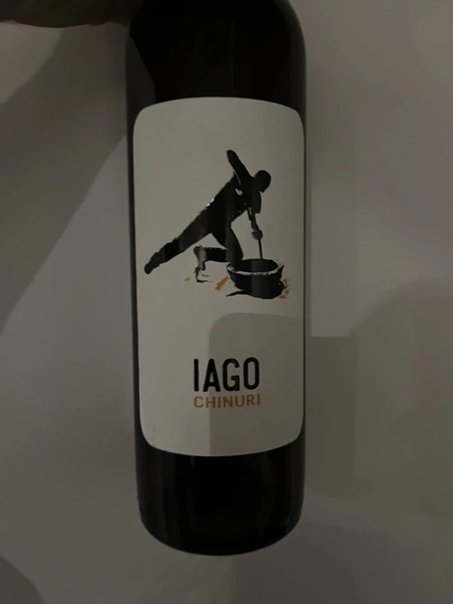

- Type
- White Still, Dry
- Producer
- Iago
- Vintage
- 2021
- Location
- Georgia, Kvemo Kartli
- Grapes
- Chinuri
- Alcohol
- 12.5
- Sugar
- NA
- Price
- 836 UAH
- Cellar
- N/A
Ratings
2022-11-24 - 8.00
Iago Chinuri delivers everything you would expect from a young well-made Georgian orange. It has a charming bouquet full of dried apricot, dried apples, field flowers, spices and a tiny bit of VA. Elevated thanks to medium-high acidity and VA, voluminous with nice medium-high tannin and persistent aftertaste that flows from quince-apricot jam to buttery sensation mixed with macadamia nut and walnut husk. It’s sophisticated and elegant even in its youth. So it leaves me dreaming about its development in the next 3-5 years.